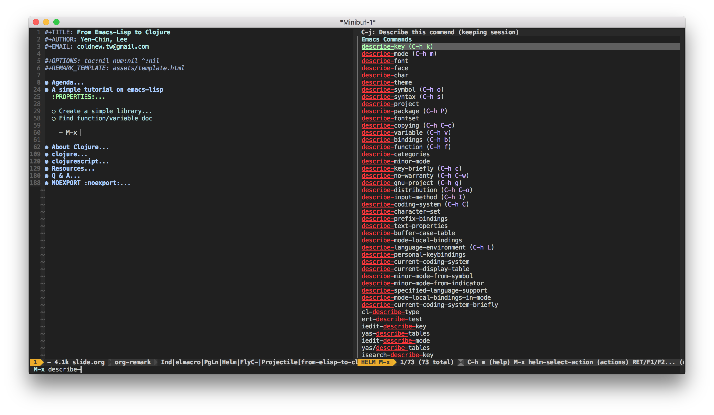

class: center, middle # From Emacs-Lisp to Clojure Yen-Chin, Lee http://coldnew.github.io/from-emacs-lisp-to-clojure <!-- body --> --- # Agenda <br> - A simple tutorial on emacs-lisp - About Clojure - Clojure by example - Clojure's building system - ClojureScript - Resources --- class: center, middle, inverse # Emacs-Lisp Tutorial <br> --- ## S-Expression is simple <br> - Use `C-x C-e` to eval S-Expression <div class="org-src-container"> <pre class="src src-emacs-lisp"><span style="color: #5f5f5f; font-style: italic;">;; </span><span style="color: #9ac; font-style: italic;">S-Expression</span> <span style="color: #aadddd;">(</span>SYMBOL PARAMETER1 PARAMETER2 ...<span style="color: #aadddd;">)</span> <span style="color: #5f5f5f; font-style: italic;">;; </span><span style="color: #9ac; font-style: italic;">1 + 2 + 3 + 4</span> <span style="color: #aadddd;">(</span>+ <span style="color: #ccaaff;">1</span> <span style="color: #ccaaff;">2</span> <span style="color: #ccaaff;">3</span> <span style="color: #ccaaff;">4</span><span style="color: #aadddd;">)</span> <span style="color: #5f5f5f; font-style: italic;">; </span><span style="color: #9ac; font-style: italic;">=> 10</span> <span style="color: #5f5f5f; font-style: italic;">;; </span><span style="color: #9ac; font-style: italic;">(1 + 2) * (3 + 4)</span> <span style="color: #aadddd;">(</span>* <span style="color: #81d4fa;">(</span>+ <span style="color: #ccaaff;">1</span> <span style="color: #ccaaff;">2</span><span style="color: #81d4fa;">)</span> <span style="color: #81d4fa;">(</span>+ <span style="color: #ccaaff;">3</span> <span style="color: #ccaaff;">4</span><span style="color: #81d4fa;">)</span><span style="color: #aadddd;">)</span> <span style="color: #5f5f5f; font-style: italic;">; </span><span style="color: #9ac; font-style: italic;">=> 21</span> <span style="color: #5f5f5f; font-style: italic;">;; </span><span style="color: #9ac; font-style: italic;">show "Hello LISP!" in emacs</span> <span style="color: #aadddd;">(</span>message <span style="color: #aadddd;">"Hello LISP!"</span><span style="color: #aadddd;">)</span> <span style="color: #5f5f5f; font-style: italic;">; </span><span style="color: #9ac; font-style: italic;">=> Hello LISP!</span> <span style="color: #5f5f5f; font-style: italic;">;; </span><span style="color: #9ac; font-style: italic;">`</span><span style="color: #ccaaff; font-style: italic;">quote</span><span style="color: #9ac; font-style: italic;">' means not eval it</span> '<span style="color: #aadddd;">(</span><span style="color: #ccaaff;">1</span> <span style="color: #ccaaff;">2</span> <span style="color: #ccaaff;">3</span> <span style="color: #ccaaff;">4</span><span style="color: #aadddd;">)</span> <span style="color: #5f5f5f; font-style: italic;">; </span><span style="color: #9ac; font-style: italic;">=> (1 2 3 4)</span> <span style="color: #aadddd;">(</span><span style="color: #aaffaa;">quote</span> <span style="color: #81d4fa;">(</span><span style="color: #ccaaff;">1</span> <span style="color: #ccaaff;">2</span> <span style="color: #ccaaff;">3</span> <span style="color: #ccaaff;">4</span><span style="color: #81d4fa;">)</span><span style="color: #aadddd;">)</span> <span style="color: #5f5f5f; font-style: italic;">; </span><span style="color: #9ac; font-style: italic;">=> (1 2 3 4)</span> <span style="color: #5f5f5f; font-style: italic;">;; </span><span style="color: #9ac; font-style: italic;">t is `</span><span style="color: #ccaaff; font-style: italic;">true</span><span style="color: #9ac; font-style: italic;">', nil is `</span><span style="color: #ccaaff; font-style: italic;">false</span><span style="color: #9ac; font-style: italic;">'</span> <span style="color: #aadddd;">(</span><span style="color: #aaffaa;">if</span> t <span style="color: #aadddd;">"true"</span> <span style="color: #aadddd;">"false"</span><span style="color: #aadddd;">)</span> <span style="color: #5f5f5f; font-style: italic;">; </span><span style="color: #9ac; font-style: italic;">=> true</span> <span style="color: #aadddd;">(</span><span style="color: #aaffaa;">if</span> nil <span style="color: #aadddd;">"true"</span> <span style="color: #aadddd;">"false"</span><span style="color: #aadddd;">)</span> <span style="color: #5f5f5f; font-style: italic;">; </span><span style="color: #9ac; font-style: italic;">=> false</span> </pre> </div> --- ## Create a library <br> - Assume you create a library call `aa.el` - You got the namespace `aa` - All function/variable should start with `aa-` <div class="org-src-container"> <pre class="src src-emacs-lisp"><span style="color: #aadddd;">(</span><span style="color: #aaffaa;">require</span> '<span style="color: #ccaaff;">cl</span><span style="color: #aadddd;">)</span> <span style="color: #5f5f5f; font-style: italic;">; </span><span style="color: #9ac; font-style: italic;">import library `</span><span style="color: #ccaaff; font-style: italic;">cl.el</span><span style="color: #9ac; font-style: italic;">'</span> <span style="color: #aadddd;">(</span><span style="color: #aaffaa;">defvar</span> <span style="color: #aaccff;">aa--count</span> <span style="color: #ccaaff;">0</span> <span style="color: #97abc6; font-style: italic;">"A private variable to store current count value."</span><span style="color: #aadddd;">)</span> <span style="color: #aadddd;">(</span><span style="color: #aaffaa;">defun</span> <span style="color: #aaccff;">aa-add</span> <span style="color: #81d4fa;">(</span>a b<span style="color: #81d4fa;">)</span> <span style="color: #97abc6; font-style: italic;">"Return A + b."</span> <span style="color: #81d4fa;">(</span>+ a b<span style="color: #81d4fa;">)</span><span style="color: #aadddd;">)</span> <span style="color: #aadddd;">(</span><span style="color: #aaffaa;">defun</span> <span style="color: #aaccff;">aa-add-to</span> <span style="color: #81d4fa;">(</span>a<span style="color: #81d4fa;">)</span> <span style="color: #97abc6; font-style: italic;">"Add a to count, return count."</span> <span style="color: #81d4fa;">(</span><span style="color: #aaffaa;">let</span> <span style="color: #aaccff;">(</span><span style="color: #aaeecc;">(</span>s <span style="color: #ccaaff;">(</span>+ aa--count a<span style="color: #ccaaff;">)</span><span style="color: #aaeecc;">)</span><span style="color: #aaccff;">)</span> <span style="color: #aaccff;">(</span><span style="color: #aaffaa;">setq</span> aa--count s<span style="color: #aaccff;">)</span><span style="color: #81d4fa;">)</span><span style="color: #aadddd;">)</span> <span style="color: #aadddd;">(</span><span style="color: #aaffaa;">provide</span> '<span style="color: #ccaaff;">aa</span><span style="color: #aadddd;">)</span> <span style="color: #5f5f5f; font-style: italic;">;; </span><span style="color: #9ac; font-style: italic;">aa.el ends here</span> </pre> </div> --- ## Find function/variable doc <br> - Find function doc with `M-x describe-function` - Find variable doc with `M-x describe-variable`  --- class: center, middle, inverse # Clojure <br> <img src="picts/clojure.png" alt="clojure.png" width="20%" /> --- ## Clojure - A LISP dialect on JVM <br> - Functional programming language (immutability) create in 2007 - Host on JVM - A LISP dialect (LISP-1) (`Emacs-Lisp is LISP-2`) - Open Source under Eclipse Public License - Create by <a href="https://github.com/richhickey">Rich Hickey</a> <br> --- ## LISP trending akas why Clojure <br> <img src="picts/lisp%20trend1.png" alt="lisp%20trend1.png" width="60%" /> <img src="picts/lisp%20trend2.png" alt="lisp%20trend2.png" width="60%" /> --- ## Clojure and it's dialect <br> - <a href="http://clojure.org/">Clojure</a> (JVM) - <a href="https://github.com/clojure/clojurescript">ClojureScript</a> (Javascript) - <a href="https://github.com/clojure/clojure-clr">ClojureCLR</a> (.NET) --- class: center, middle, inverse # Clojure vs Emacs-Lisp <br> <img src="picts/clojure.png" alt="clojure.png" width="20%" /> <a href="http://www.tryclj.com/">http://www.tryclj.com/</a> --- ## Boolean <br> - Emacs-Lisp <div class="org-src-container"> <pre class="src src-emacs-lisp">t <span style="color: #5f5f5f; font-style: italic;">; </span><span style="color: #9ac; font-style: italic;">=> true</span> nil <span style="color: #5f5f5f; font-style: italic;">; </span><span style="color: #9ac; font-style: italic;">=> false</span> <span style="color: #5f5f5f; font-style: italic;">;; </span><span style="color: #9ac; font-style: italic;">`</span><span style="color: #ccaaff; font-style: italic;">nil</span><span style="color: #9ac; font-style: italic;">' is null in emacs-lisp</span> </pre> </div> - Clojure <div class="org-src-container"> <pre class="src src-clojure"><span style="color: #ccaaff;">true</span> <span style="color: #9ac; font-style: italic;">; => true</span> <span style="color: #ccaaff;">false</span> <span style="color: #9ac; font-style: italic;">; => false</span> <span style="color: #ccaaff;">nil</span> <span style="color: #9ac; font-style: italic;">; => nil</span> <span style="color: #aadddd;">(</span>= <span style="color: #ccaaff;">nil</span> <span style="color: #ccaaff;">false</span><span style="color: #aadddd;">)</span> <span style="color: #9ac; font-style: italic;">; => false</span> </pre> </div> --- ## Numbers <br> - Emacs-Lisp <div class="org-src-container"> <pre class="src src-emacs-lisp"><span style="color: #ccaaff;">1</span> <span style="color: #5f5f5f; font-style: italic;">; </span><span style="color: #9ac; font-style: italic;">=> 1</span> <span style="color: #ccaaff;">1.2</span> <span style="color: #5f5f5f; font-style: italic;">; </span><span style="color: #9ac; font-style: italic;">=> 1.2</span> <span style="color: #ccaaff;">1e6</span> <span style="color: #5f5f5f; font-style: italic;">; </span><span style="color: #9ac; font-style: italic;">=> 1000000.0</span> <span style="color: #5f5f5f; font-style: italic;">;; </span><span style="color: #9ac; font-style: italic;">different from clojure</span> <span style="color: #ccaaff;">#b101</span> <span style="color: #5f5f5f; font-style: italic;">; </span><span style="color: #9ac; font-style: italic;">=> 5</span> <span style="color: #ccaaff;">#x12</span> <span style="color: #5f5f5f; font-style: italic;">; </span><span style="color: #9ac; font-style: italic;">=> 18</span> </pre> </div> - Clojure <div class="org-src-container"> <pre class="src src-clojure"><span style="color: #5f5f5f; font-style: italic;">;; </span><span style="color: #9ac; font-style: italic;">same as emacs-lisp</span> <span style="color: #ccaaff;">1</span> <span style="color: #9ac; font-style: italic;">; => 1</span> <span style="color: #ccaaff;">1.2</span> <span style="color: #9ac; font-style: italic;">; => 1.2</span> <span style="color: #ccaaff;">1e6</span> <span style="color: #9ac; font-style: italic;">; => 1000000.0</span> <span style="color: #5f5f5f; font-style: italic;">;; </span><span style="color: #9ac; font-style: italic;">different from emacs-lisp</span> <span style="color: #ccaaff;">2r101</span> <span style="color: #9ac; font-style: italic;">; => 5</span> <span style="color: #ccaaff;">25/3</span> <span style="color: #9ac; font-style: italic;">; => 25/3</span> <span style="color: #ccaaff;">0x12</span> <span style="color: #9ac; font-style: italic;">; => 18</span> </pre> </div> --- ## String <br> - Emacs-Lisp <div class="org-src-container"> <pre class="src src-emacs-lisp"><span style="color: #aadddd;">"Hello LISP!"</span> <span style="color: #5f5f5f; font-style: italic;">; </span><span style="color: #9ac; font-style: italic;">=> "Hello LISP!"</span> </pre> </div> - Clojure <div class="org-src-container"> <pre class="src src-clojure"><span style="color: #aadddd;">"Hello LISP!"</span> <span style="color: #9ac; font-style: italic;">; => "Hello LISP!"</span> </pre> </div> --- ## Characters <br> - Emacs-Lisp <div class="org-src-container"> <pre class="src src-emacs-lisp">?a <span style="color: #5f5f5f; font-style: italic;">; </span><span style="color: #9ac; font-style: italic;">a => 97</span> ?A <span style="color: #5f5f5f; font-style: italic;">; </span><span style="color: #9ac; font-style: italic;">A => 65</span> </pre> </div> - Clojure <div class="org-src-container"> <pre class="src src-clojure"><span style="color: #aadddd;">\a</span> <span style="color: #9ac; font-style: italic;">; a => 97</span> \<span style="color: #ccaaff;">A</span> <span style="color: #9ac; font-style: italic;">; A => 65</span> </pre> </div> --- ## Lists <br> - Emacs-Lisp <div class="org-src-container"> <pre class="src src-emacs-lisp">'<span style="color: #aadddd;">(</span><span style="color: #ccaaff;">1</span> <span style="color: #ccaaff;">2</span> <span style="color: #ccaaff;">3</span> <span style="color: #ccaaff;">4</span> <span style="color: #ccaaff;">5</span><span style="color: #aadddd;">)</span> <span style="color: #5f5f5f; font-style: italic;">; </span><span style="color: #9ac; font-style: italic;">=> (1 2 3 4 5)</span> <span style="color: #aadddd;">(</span>nth <span style="color: #ccaaff;">2</span> '<span style="color: #81d4fa;">(</span><span style="color: #ccaaff;">1</span> <span style="color: #ccaaff;">2</span> <span style="color: #ccaaff;">3</span> <span style="color: #ccaaff;">4</span> <span style="color: #ccaaff;">5</span><span style="color: #81d4fa;">)</span><span style="color: #aadddd;">)</span> <span style="color: #5f5f5f; font-style: italic;">; </span><span style="color: #9ac; font-style: italic;">=> 3</span> <span style="color: #aadddd;">(</span>length '<span style="color: #81d4fa;">(</span><span style="color: #ccaaff;">1</span> <span style="color: #ccaaff;">2</span> <span style="color: #ccaaff;">3</span> <span style="color: #ccaaff;">4</span> <span style="color: #ccaaff;">5</span><span style="color: #81d4fa;">)</span><span style="color: #aadddd;">)</span> <span style="color: #5f5f5f; font-style: italic;">; </span><span style="color: #9ac; font-style: italic;">=> 5</span> <span style="color: #aadddd;">(</span>cons '<span style="color: #ccaaff;">3</span> '<span style="color: #81d4fa;">(</span><span style="color: #ccaaff;">1</span> <span style="color: #ccaaff;">2</span><span style="color: #81d4fa;">)</span><span style="color: #aadddd;">)</span> <span style="color: #5f5f5f; font-style: italic;">; </span><span style="color: #9ac; font-style: italic;">(3 1 2)</span> </pre> </div> - Clojure <div class="org-src-container"> <pre class="src src-clojure">'<span style="color: #aadddd;">(</span><span style="color: #ccaaff;">1</span> <span style="color: #ccaaff;">2</span> <span style="color: #ccaaff;">3</span> <span style="color: #ccaaff;">4</span> <span style="color: #ccaaff;">5</span><span style="color: #aadddd;">)</span> <span style="color: #9ac; font-style: italic;">; => (1 2 3 4 5)</span> <span style="color: #aadddd;">(</span><span style="color: #ccaaff;">nth</span> '<span style="color: #81d4fa;">(</span><span style="color: #ccaaff;">1</span> <span style="color: #ccaaff;">2</span> <span style="color: #ccaaff;">3</span> <span style="color: #ccaaff;">4</span> <span style="color: #ccaaff;">5</span><span style="color: #81d4fa;">)</span> <span style="color: #ccaaff;">2</span><span style="color: #aadddd;">)</span> <span style="color: #9ac; font-style: italic;">; => 3</span> <span style="color: #aadddd;">(</span><span style="color: #ccaaff;">count</span> '<span style="color: #81d4fa;">(</span><span style="color: #ccaaff;">1</span> <span style="color: #ccaaff;">2</span> <span style="color: #ccaaff;">3</span> <span style="color: #ccaaff;">4</span> <span style="color: #ccaaff;">5</span><span style="color: #81d4fa;">)</span><span style="color: #aadddd;">)</span> <span style="color: #9ac; font-style: italic;">; => 5</span> <span style="color: #aadddd;">(</span><span style="color: #ccaaff;">conj</span> '<span style="color: #81d4fa;">(</span><span style="color: #ccaaff;">1</span> <span style="color: #ccaaff;">2</span><span style="color: #81d4fa;">)</span> <span style="color: #ccaaff;">3</span><span style="color: #aadddd;">)</span> <span style="color: #9ac; font-style: italic;">; (3 1 2)</span> </pre> </div> --- ## Vectors <br> - Emacs-Lisp <div class="org-src-container"> <pre class="src src-emacs-lisp">'<span style="color: #aadddd;">[</span><span style="color: #ccaaff;">3</span> <span style="color: #ccaaff;">4</span> <span style="color: #ccaaff;">5</span><span style="color: #aadddd;">]</span> <span style="color: #5f5f5f; font-style: italic;">; </span><span style="color: #9ac; font-style: italic;">=> [3 4 5]</span> <span style="color: #aadddd;">(</span>vector <span style="color: #ccaaff;">3</span> <span style="color: #ccaaff;">4</span> <span style="color: #ccaaff;">5</span><span style="color: #aadddd;">)</span> <span style="color: #5f5f5f; font-style: italic;">; </span><span style="color: #9ac; font-style: italic;">=> [3 4 5]</span> <span style="color: #aadddd;">(</span>length <span style="color: #81d4fa;">(</span>vector <span style="color: #ccaaff;">3</span> <span style="color: #ccaaff;">4</span> <span style="color: #ccaaff;">5</span><span style="color: #81d4fa;">)</span><span style="color: #aadddd;">)</span> <span style="color: #5f5f5f; font-style: italic;">; </span><span style="color: #9ac; font-style: italic;">=> 3</span> <span style="color: #aadddd;">(</span>elt '<span style="color: #81d4fa;">[</span><span style="color: #ccaaff;">3</span> <span style="color: #ccaaff;">4</span> <span style="color: #ccaaff;">5</span><span style="color: #81d4fa;">]</span> <span style="color: #ccaaff;">1</span><span style="color: #aadddd;">)</span> <span style="color: #5f5f5f; font-style: italic;">; </span><span style="color: #9ac; font-style: italic;">=> 4</span> </pre> </div> - Clojure <div class="org-src-container"> <pre class="src src-clojure"><span style="color: #aadddd;">[</span><span style="color: #ccaaff;">3</span> <span style="color: #ccaaff;">4</span> <span style="color: #ccaaff;">5</span><span style="color: #aadddd;">]</span> <span style="color: #9ac; font-style: italic;">; => [3 4 5]</span> <span style="color: #aadddd;">(</span><span style="color: #ccaaff;">vector</span> <span style="color: #ccaaff;">3</span> <span style="color: #ccaaff;">4</span> <span style="color: #ccaaff;">5</span><span style="color: #aadddd;">)</span> <span style="color: #9ac; font-style: italic;">; => [3 4 5]</span> <span style="color: #aadddd;">(</span><span style="color: #ccaaff;">count</span> <span style="color: #81d4fa;">[</span><span style="color: #ccaaff;">3</span> <span style="color: #ccaaff;">4</span> <span style="color: #ccaaff;">5</span><span style="color: #81d4fa;">]</span><span style="color: #aadddd;">)</span> <span style="color: #9ac; font-style: italic;">; => 3</span> <span style="color: #aadddd;">(</span><span style="color: #ccaaff;">nth</span> <span style="color: #81d4fa;">[</span><span style="color: #ccaaff;">3</span> <span style="color: #ccaaff;">4</span> <span style="color: #ccaaff;">5</span><span style="color: #81d4fa;">]</span> <span style="color: #ccaaff;">1</span><span style="color: #aadddd;">)</span> <span style="color: #9ac; font-style: italic;">; => 4</span> </pre> </div> --- ## Sets <br> - Emacs-Lisp <div class="org-src-container"> <pre class="src src-emacs-lisp"><span style="color: #5f5f5f; font-style: italic;">;; </span><span style="color: #9ac; font-style: italic;">seems like emacs-lisp doesn't has `</span><span style="color: #ccaaff; font-style: italic;">hash-set</span><span style="color: #9ac; font-style: italic;">' ?</span> </pre> </div> - Clojure <div class="org-src-container"> <pre class="src src-clojure">#<span style="color: #aadddd;">{</span><span style="color: #ccaaff;">1</span> <span style="color: #ccaaff;">2</span> <span style="color: #ccaaff;">3</span><span style="color: #aadddd;">}</span> <span style="color: #9ac; font-style: italic;">; => #{1 2 3}</span> <span style="color: #aadddd;">(</span><span style="color: #ccaaff;">hash-set</span> <span style="color: #ccaaff;">1</span> <span style="color: #ccaaff;">2</span> <span style="color: #ccaaff;">3</span><span style="color: #aadddd;">)</span> <span style="color: #9ac; font-style: italic;">; => #{1 2 3}</span> <span style="color: #aadddd;">(</span><span style="color: #ccaaff;">hash-set</span> <span style="color: #ccaaff;">1</span> <span style="color: #ccaaff;">2</span> <span style="color: #ccaaff;">3</span> <span style="color: #ccaaff;">3</span><span style="color: #aadddd;">)</span> <span style="color: #9ac; font-style: italic;">; => #{1 3 2}</span> </pre> </div> --- ## Map <br> - Emacs-Lisp <div class="org-src-container"> <pre class="src src-emacs-lisp">'<span style="color: #aadddd;">(</span><span style="color: #ccaaff;">:Apple</span> <span style="color: #aadddd;">"Mac"</span> <span style="color: #ccaaff;">:Microsoft</span> <span style="color: #aadddd;">"Windows"</span><span style="color: #aadddd;">)</span> <span style="color: #5f5f5f; font-style: italic;">; </span><span style="color: #9ac; font-style: italic;">=> (:Apple "Mac" :Microsoft "Windows")</span> <span style="color: #aadddd;">(</span>plist-get '<span style="color: #81d4fa;">(</span><span style="color: #ccaaff;">:Apple</span> <span style="color: #aadddd;">"Mac"</span> <span style="color: #ccaaff;">:Microsoft</span> <span style="color: #aadddd;">"Windows"</span><span style="color: #81d4fa;">)</span> <span style="color: #ccaaff;">:Apple</span><span style="color: #aadddd;">)</span> <span style="color: #5f5f5f; font-style: italic;">; </span><span style="color: #9ac; font-style: italic;">=> "Mac"</span> </pre> </div> - Clojure <div class="org-src-container"> <pre class="src src-clojure"><span style="color: #aadddd;">{</span><span style="color: #ccaaff;">:Apple</span> <span style="color: #aadddd;">"Mac"</span> <span style="color: #ccaaff;">:Microsoft</span> <span style="color: #aadddd;">"Windows"</span><span style="color: #aadddd;">}</span> <span style="color: #9ac; font-style: italic;">; => {</span><span style="color: #9ac; font-style: italic;">:Apple</span><span style="color: #9ac; font-style: italic;"> "Mac" </span><span style="color: #9ac; font-style: italic;">:Microsoft</span><span style="color: #9ac; font-style: italic;"> "Windows"}</span> <span style="color: #aadddd;">(</span><span style="color: #ccaaff;">:Apple</span> <span style="color: #81d4fa;">{</span><span style="color: #ccaaff;">:Apple</span> <span style="color: #aadddd;">"Mac"</span> <span style="color: #ccaaff;">:Microsoft</span> <span style="color: #aadddd;">"Windows"</span><span style="color: #81d4fa;">}</span><span style="color: #aadddd;">)</span> <span style="color: #9ac; font-style: italic;">; => "Mac"</span> <span style="color: #aadddd;">(</span><span style="color: #81d4fa;">{</span><span style="color: #ccaaff;">:Apple</span> <span style="color: #aadddd;">"Mac"</span> <span style="color: #ccaaff;">:Microsoft</span> <span style="color: #aadddd;">"Windows"</span><span style="color: #81d4fa;">}</span> <span style="color: #ccaaff;">:Apple</span><span style="color: #aadddd;">)</span> <span style="color: #9ac; font-style: italic;">; => "Mac"</span> </pre> </div> --- ## Variables <br> - Emacs-Lisp <div class="org-src-container"> <pre class="src src-emacs-lisp"><span style="color: #aadddd;">(</span><span style="color: #aaffaa;">defvar</span> <span style="color: #aaccff;">hello</span> <span style="color: #aadddd;">"hi"</span> <span style="color: #97abc6; font-style: italic;">"variable doc"</span><span style="color: #aadddd;">)</span> <span style="color: #5f5f5f; font-style: italic;">; </span><span style="color: #9ac; font-style: italic;">=> "hi"</span> <span style="color: #aadddd;">(</span><span style="color: #aaffaa;">setq</span> hello <span style="color: #aadddd;">"world"</span><span style="color: #aadddd;">)</span> <span style="color: #5f5f5f; font-style: italic;">; </span><span style="color: #9ac; font-style: italic;">=> "world"</span> hello <span style="color: #5f5f5f; font-style: italic;">; </span><span style="color: #9ac; font-style: italic;">=> "world"</span> </pre> </div> - Clojure <div class="org-src-container"> <pre class="src src-clojure"><span style="color: #aadddd;">(</span><span style="color: #aaffaa;">def</span> <span style="color: #aaccff;">hello</span> <span style="color: #97abc6; font-style: italic;">"variable doc"</span> <span style="color: #aadddd;">"hi"</span><span style="color: #aadddd;">)</span> <span style="color: #9ac; font-style: italic;">; => "hi"</span> <span style="color: #5f5f5f; font-style: italic;">;; </span><span style="color: #9ac; font-style: italic;">No `</span><span style="color: #ccaaff; font-style: italic;">setq</span><span style="color: #9ac; font-style: italic;">` like function for clojure since variable is immutable</span> <span style="color: #5f5f5f; font-style: italic;">;; </span><span style="color: #aadddd;">NOTE</span><span style="color: #9ac; font-style: italic;">: for java mutable variable, you can use `</span><span style="color: #ccaaff; font-style: italic;">set!</span><span style="color: #9ac; font-style: italic;">` to set the variable</span> </pre> </div> --- ## Local Variables <br> - Emacs-Lisp <div class="org-src-container"> <pre class="src src-emacs-lisp"><span style="color: #aadddd;">(</span><span style="color: #aaffaa;">let</span> <span style="color: #81d4fa;">(</span><span style="color: #aaccff;">(</span>x <span style="color: #ccaaff;">1</span><span style="color: #aaccff;">)</span> <span style="color: #aaccff;">(</span>y <span style="color: #ccaaff;">2</span><span style="color: #aaccff;">)</span><span style="color: #81d4fa;">)</span> <span style="color: #81d4fa;">(</span>+ x y<span style="color: #81d4fa;">)</span><span style="color: #aadddd;">)</span> <span style="color: #5f5f5f; font-style: italic;">; </span><span style="color: #9ac; font-style: italic;">=> 3</span> <span style="color: #aadddd;">(</span><span style="color: #aaffaa;">let</span> <span style="color: #81d4fa;">(</span><span style="color: #aaccff;">(</span>hello <span style="color: #aadddd;">"hi"</span><span style="color: #aaccff;">)</span><span style="color: #81d4fa;">)</span> <span style="color: #81d4fa;">(</span><span style="color: #aaffaa;">setq</span> hello <span style="color: #aadddd;">"world"</span><span style="color: #81d4fa;">)</span> hello<span style="color: #aadddd;">)</span> <span style="color: #5f5f5f; font-style: italic;">; </span><span style="color: #9ac; font-style: italic;">=> "world"</span> </pre> </div> - Clojure <div class="org-src-container"> <pre class="src src-clojure"><span style="color: #aadddd;">(</span><span style="color: #aaffaa;">let</span> <span style="color: #81d4fa;">[</span>x <span style="color: #ccaaff;">1</span> y <span style="color: #ccaaff;">2</span><span style="color: #81d4fa;">]</span> <span style="color: #81d4fa;">(</span>+ x y<span style="color: #81d4fa;">)</span><span style="color: #aadddd;">)</span> <span style="color: #9ac; font-style: italic;">; => 3</span> <span style="color: #aadddd;">(</span><span style="color: #aaffaa;">with-local-vars</span> <span style="color: #81d4fa;">[</span>hello <span style="color: #aadddd;">"hi"</span><span style="color: #81d4fa;">]</span> <span style="color: #81d4fa;">(</span><span style="color: #ccaaff;">var-set</span> hello <span style="color: #aadddd;">"world"</span><span style="color: #81d4fa;">)</span> @hello<span style="color: #aadddd;">)</span> <span style="color: #9ac; font-style: italic;">; => world</span> </pre> </div> --- ## If … Else - Emacs-Lisp <div class="org-src-container"> <pre class="src src-emacs-lisp"><span style="color: #aadddd;">(</span><span style="color: #aaffaa;">if</span> <span style="color: #aadddd;">"foo"</span> <span style="color: #aadddd;">"truthy"</span> <span style="color: #aadddd;">"falsey"</span><span style="color: #aadddd;">)</span> <span style="color: #5f5f5f; font-style: italic;">;</span><span style="color: #9ac; font-style: italic;">=> "truthy"</span> <span style="color: #aadddd;">(</span><span style="color: #aaffaa;">if</span> <span style="color: #ccaaff;">0</span> <span style="color: #aadddd;">"truthy"</span> <span style="color: #aadddd;">"falsey"</span><span style="color: #aadddd;">)</span> <span style="color: #5f5f5f; font-style: italic;">;</span><span style="color: #9ac; font-style: italic;">=> "truthy"</span> <span style="color: #aadddd;">(</span><span style="color: #aaffaa;">if</span> <span style="color: #81d4fa;">[]</span> <span style="color: #aadddd;">"truthy"</span> <span style="color: #aadddd;">"falsey"</span><span style="color: #aadddd;">)</span> <span style="color: #5f5f5f; font-style: italic;">;</span><span style="color: #9ac; font-style: italic;">=> "truthy"</span> <span style="color: #aadddd;">(</span><span style="color: #aaffaa;">if</span> nil <span style="color: #aadddd;">"truthy"</span> <span style="color: #aadddd;">"falsey"</span><span style="color: #aadddd;">)</span> <span style="color: #5f5f5f; font-style: italic;">;</span><span style="color: #9ac; font-style: italic;">=> "falsey"</span> <span style="color: #aadddd;">(</span><span style="color: #aaffaa;">if</span> t <span style="color: #81d4fa;">(</span><span style="color: #aaffaa;">progn</span> <span style="color: #aaccff;">(</span>print <span style="color: #aadddd;">"print-true"</span><span style="color: #aaccff;">)</span> <span style="color: #aadddd;">"true"</span><span style="color: #81d4fa;">)</span> <span style="color: #aadddd;">"false"</span><span style="color: #aadddd;">)</span> </pre> </div> Only `nil` acts as `false`. - Clojure <div class="org-src-container"> <pre class="src src-clojure"><span style="color: #aadddd;">(</span><span style="color: #aaffaa;">if</span> <span style="color: #aadddd;">"foo"</span> <span style="color: #aadddd;">"truthy"</span> <span style="color: #aadddd;">"falsey"</span><span style="color: #aadddd;">)</span> <span style="color: #9ac; font-style: italic;">;=> "truthy"</span> <span style="color: #aadddd;">(</span><span style="color: #aaffaa;">if</span> <span style="color: #ccaaff;">0</span> <span style="color: #aadddd;">"truthy"</span> <span style="color: #aadddd;">"falsey"</span><span style="color: #aadddd;">)</span> <span style="color: #9ac; font-style: italic;">;=> "truthy"</span> <span style="color: #aadddd;">(</span><span style="color: #aaffaa;">if</span> <span style="color: #81d4fa;">[]</span> <span style="color: #aadddd;">"truthy"</span> <span style="color: #aadddd;">"falsey"</span><span style="color: #aadddd;">)</span> <span style="color: #9ac; font-style: italic;">;=> "truthy"</span> <span style="color: #aadddd;">(</span><span style="color: #aaffaa;">if</span> <span style="color: #ccaaff;">false</span> <span style="color: #aadddd;">"truthy"</span> <span style="color: #aadddd;">"falsey"</span><span style="color: #aadddd;">)</span> <span style="color: #9ac; font-style: italic;">;=> "falsey"</span> <span style="color: #aadddd;">(</span><span style="color: #aaffaa;">if</span> <span style="color: #ccaaff;">nil</span> <span style="color: #aadddd;">"truthy"</span> <span style="color: #aadddd;">"falsey"</span><span style="color: #aadddd;">)</span> <span style="color: #9ac; font-style: italic;">;=> "falsey"</span> <span style="color: #aadddd;">(</span><span style="color: #aaffaa;">if</span> t <span style="color: #81d4fa;">(</span><span style="color: #aaffaa;">do</span> <span style="color: #aaccff;">(</span><span style="color: #ccaaff;">println</span> <span style="color: #aadddd;">"print-true"</span><span style="color: #aaccff;">)</span> <span style="color: #aadddd;">"true"</span><span style="color: #81d4fa;">)</span> <span style="color: #aadddd;">"false"</span><span style="color: #aadddd;">)</span> </pre> </div> Everything except `nil` and `false` acts as `true`. --- ## Loop <br> - Emacs-Lisp <div class="org-src-container"> <pre class="src src-emacs-lisp"><span style="color: #aadddd;">(</span><span style="color: #aaffaa;">require</span> '<span style="color: #ccaaff;">cl</span><span style="color: #aadddd;">)</span> <span style="color: #5f5f5f; font-style: italic;">; </span><span style="color: #9ac; font-style: italic;">for `</span><span style="color: #ccaaff; font-style: italic;">cl-loop</span><span style="color: #9ac; font-style: italic;">'</span> <span style="color: #aadddd;">(</span><span style="color: #aaffaa;">let</span> <span style="color: #81d4fa;">(</span><span style="color: #aaccff;">(</span>i <span style="color: #ccaaff;">1</span><span style="color: #aaccff;">)</span><span style="color: #81d4fa;">)</span> <span style="color: #81d4fa;">(</span><span style="color: #aaffaa;">cl-loop</span> <span style="color: #aaccff;">(</span>print <span style="color: #aaeecc;">(</span>format <span style="color: #aadddd;">"hello: %d"</span> i<span style="color: #aaeecc;">)</span><span style="color: #aaccff;">)</span> <span style="color: #aaccff;">(</span><span style="color: #aaffaa;">if</span> <span style="color: #aaeecc;">(</span>> i <span style="color: #ccaaff;">10</span><span style="color: #aaeecc;">)</span> <span style="color: #aaeecc;">(</span><span style="color: #aaffaa;">return</span><span style="color: #aaeecc;">)</span> <span style="color: #aaeecc;">(</span><span style="color: #aaffaa;">setq</span> i <span style="color: #ccaaff;">(</span>+ i <span style="color: #ccaaff;">1</span><span style="color: #ccaaff;">)</span><span style="color: #aaeecc;">)</span><span style="color: #aaccff;">)</span><span style="color: #81d4fa;">)</span><span style="color: #aadddd;">)</span> </pre> </div> - Clojure <div class="org-src-container"> <pre class="src src-clojure"><span style="color: #aadddd;">(</span><span style="color: #aaffaa;">loop</span> <span style="color: #81d4fa;">[</span>i <span style="color: #ccaaff;">1</span><span style="color: #81d4fa;">]</span> <span style="color: #81d4fa;">(</span><span style="color: #ccaaff;">println</span> <span style="color: #aaccff;">(</span><span style="color: #ccaaff;">str</span> <span style="color: #aadddd;">"hello: "</span> i<span style="color: #aaccff;">)</span><span style="color: #81d4fa;">)</span> <span style="color: #81d4fa;">(</span><span style="color: #aaffaa;">if</span> <span style="color: #aaccff;">(</span>< i <span style="color: #ccaaff;">10</span><span style="color: #aaccff;">)</span> <span style="color: #aaccff;">(</span><span style="color: #aaffaa;">recur</span> <span style="color: #aaeecc;">(</span><span style="color: #ccaaff;">inc</span> i<span style="color: #aaeecc;">)</span><span style="color: #aaccff;">)</span><span style="color: #81d4fa;">)</span><span style="color: #aadddd;">)</span> <span style="color: #9ac; font-style: italic;">; tail recursion</span> </pre> </div> --- ## Functions - Emacs-Lisp <div class="org-src-container"> <pre class="src src-emacs-lisp"><span style="color: #aadddd;">(</span><span style="color: #aaffaa;">defun</span> <span style="color: #aaccff;">add</span> <span style="color: #81d4fa;">(</span>x y <span style="color: #fff59d;">&optional</span> z<span style="color: #81d4fa;">)</span> <span style="color: #97abc6; font-style: italic;">"Function Doc."</span> <span style="color: #81d4fa;">(</span>+ x y <span style="color: #aaccff;">(</span><span style="color: #aaffaa;">or</span> z <span style="color: #ccaaff;">0</span><span style="color: #aaccff;">)</span><span style="color: #81d4fa;">)</span><span style="color: #aadddd;">)</span> <span style="color: #aadddd;">(</span>add <span style="color: #ccaaff;">1</span> <span style="color: #ccaaff;">2</span><span style="color: #aadddd;">)</span> <span style="color: #5f5f5f; font-style: italic;">; </span><span style="color: #9ac; font-style: italic;">=> 3</span> <span style="color: #aadddd;">(</span>add <span style="color: #ccaaff;">1</span> <span style="color: #ccaaff;">2</span> <span style="color: #ccaaff;">3</span><span style="color: #aadddd;">)</span> <span style="color: #5f5f5f; font-style: italic;">; </span><span style="color: #9ac; font-style: italic;">=> 6</span> <span style="color: #aadddd;">(</span><span style="color: #aaffaa;">defun</span> <span style="color: #aaccff;">sum</span> <span style="color: #81d4fa;">(</span>x y <span style="color: #fff59d;">&rest</span> args<span style="color: #81d4fa;">)</span> <span style="color: #81d4fa;">(</span>+ x y <span style="color: #aaccff;">(</span>apply '+ args<span style="color: #aaccff;">)</span><span style="color: #81d4fa;">)</span><span style="color: #aadddd;">)</span> <span style="color: #aadddd;">(</span>sum <span style="color: #ccaaff;">1</span> <span style="color: #ccaaff;">2</span> <span style="color: #ccaaff;">3</span> <span style="color: #ccaaff;">4</span> <span style="color: #ccaaff;">5</span> <span style="color: #ccaaff;">6</span><span style="color: #aadddd;">)</span> <span style="color: #5f5f5f; font-style: italic;">; </span><span style="color: #9ac; font-style: italic;">=> 21</span> </pre> </div> - Clojure <div class="org-src-container"> <pre class="src src-clojure"><span style="color: #aadddd;">(</span><span style="color: #aaffaa;">defn</span> <span style="color: #aaccff;">add</span> <span style="color: #97abc6; font-style: italic;">"Function Doc."</span> <span style="color: #81d4fa;">(</span><span style="color: #aaccff;">[</span>x y<span style="color: #aaccff;">]</span> <span style="color: #aaccff;">(</span>add x y <span style="color: #ccaaff;">0</span><span style="color: #aaccff;">)</span><span style="color: #81d4fa;">)</span> <span style="color: #81d4fa;">(</span><span style="color: #aaccff;">[</span>x y z<span style="color: #aaccff;">]</span> <span style="color: #aaccff;">(</span>+ x y z<span style="color: #aaccff;">)</span><span style="color: #81d4fa;">)</span><span style="color: #aadddd;">)</span> <span style="color: #aadddd;">(</span>add <span style="color: #ccaaff;">1</span> <span style="color: #ccaaff;">2</span><span style="color: #aadddd;">)</span> <span style="color: #9ac; font-style: italic;">; => 3</span> <span style="color: #aadddd;">(</span>add <span style="color: #ccaaff;">1</span> <span style="color: #ccaaff;">2</span> <span style="color: #ccaaff;">3</span><span style="color: #aadddd;">)</span> <span style="color: #9ac; font-style: italic;">; => 6</span> <span style="color: #aadddd;">(</span><span style="color: #aaffaa;">defn</span> <span style="color: #aaccff;">sum</span> <span style="color: #81d4fa;">[</span>x y & args<span style="color: #81d4fa;">]</span> <span style="color: #81d4fa;">(</span>+ x y <span style="color: #aaccff;">(</span><span style="color: #ccaaff;">apply</span> + args<span style="color: #aaccff;">)</span><span style="color: #81d4fa;">)</span><span style="color: #aadddd;">)</span> <span style="color: #aadddd;">(</span>sum <span style="color: #ccaaff;">1</span> <span style="color: #ccaaff;">2</span> <span style="color: #ccaaff;">3</span> <span style="color: #ccaaff;">4</span> <span style="color: #ccaaff;">5</span> <span style="color: #ccaaff;">6</span><span style="color: #aadddd;">)</span> <span style="color: #9ac; font-style: italic;">; => 21</span> </pre> </div> --- ## Functions Destructuring - Emacs-Lisp <div class="org-src-container"> <pre class="src src-emacs-lisp"><span style="color: #aadddd;">(</span><span style="color: #aaffaa;">defun</span> <span style="color: #aaccff;">logarithm</span> <span style="color: #81d4fa;">(</span><span style="color: #fff59d;">&key</span> number <span style="color: #fff59d;">&key</span> base<span style="color: #81d4fa;">)</span> <span style="color: #81d4fa;">(</span><span style="color: #aaffaa;">if</span> base <span style="color: #aaccff;">(</span>/ <span style="color: #aaeecc;">(</span>log number<span style="color: #aaeecc;">)</span> <span style="color: #aaeecc;">(</span>log base<span style="color: #aaeecc;">)</span><span style="color: #aaccff;">)</span> <span style="color: #aaccff;">(</span>log number<span style="color: #aaccff;">)</span><span style="color: #81d4fa;">)</span><span style="color: #aadddd;">)</span> <span style="color: #5f5f5f; font-style: italic;">;; </span><span style="color: #9ac; font-style: italic;">order significant, not key names:</span> <span style="color: #aadddd;">(</span>logarithm <span style="color: #ccaaff;">:foo</span> <span style="color: #ccaaff;">8</span> <span style="color: #ccaaff;">:bar</span> <span style="color: #ccaaff;">2</span><span style="color: #aadddd;">)</span> <span style="color: #5f5f5f; font-style: italic;">; </span><span style="color: #9ac; font-style: italic;">=> 3.0</span> <span style="color: #aadddd;">(</span>logarithm <span style="color: #ccaaff;">:bar</span> <span style="color: #ccaaff;">2</span> <span style="color: #ccaaff;">:foo</span> <span style="color: #ccaaff;">8</span><span style="color: #aadddd;">)</span> <span style="color: #5f5f5f; font-style: italic;">; </span><span style="color: #9ac; font-style: italic;">=> 0.3333333</span> </pre> </div> - Clojure <div class="org-src-container"> <pre class="src src-clojure"><span style="color: #aadddd;">(</span><span style="color: #aaffaa;">defn</span> <span style="color: #aaccff;">logarithm</span> <span style="color: #81d4fa;">[</span><span style="color: #aaccff;">{</span>x <span style="color: #ccaaff;">:number</span> b <span style="color: #ccaaff;">:base</span><span style="color: #aaccff;">}</span><span style="color: #81d4fa;">]</span> <span style="color: #81d4fa;">(</span>/ <span style="color: #aaccff;">(</span><span style="color: #fff59d;">Math</span><span style="color: #c6cccc; background-color: #202020;">/</span>log x<span style="color: #aaccff;">)</span> <span style="color: #aaccff;">(</span><span style="color: #fff59d;">Math</span><span style="color: #c6cccc; background-color: #202020;">/</span>log b<span style="color: #aaccff;">)</span><span style="color: #81d4fa;">)</span><span style="color: #aadddd;">)</span> <span style="color: #aadddd;">(</span><span style="color: #aaffaa;">defn</span> <span style="color: #aaccff;">logarithm*</span> <span style="color: #9ac; font-style: italic;">; same as `logarithm'</span> <span style="color: #81d4fa;">[</span><span style="color: #aaccff;">{</span><span style="color: #ccaaff;">:keys</span> <span style="color: #aaeecc;">[</span>number base<span style="color: #aaeecc;">]</span><span style="color: #aaccff;">}</span><span style="color: #81d4fa;">]</span> <span style="color: #81d4fa;">(</span>/ <span style="color: #aaccff;">(</span><span style="color: #fff59d;">Math</span><span style="color: #c6cccc; background-color: #202020;">/</span>log number<span style="color: #aaccff;">)</span> <span style="color: #aaccff;">(</span><span style="color: #fff59d;">Math</span><span style="color: #c6cccc; background-color: #202020;">/</span>log base<span style="color: #aaccff;">)</span><span style="color: #81d4fa;">)</span><span style="color: #aadddd;">)</span> <span style="color: #5f5f5f; font-style: italic;">;; </span><span style="color: #9ac; font-style: italic;">Order is not importent</span> <span style="color: #aadddd;">(</span>logarithm <span style="color: #81d4fa;">{</span><span style="color: #ccaaff;">:base</span> <span style="color: #ccaaff;">2</span> <span style="color: #ccaaff;">:number</span> <span style="color: #ccaaff;">8</span><span style="color: #81d4fa;">}</span><span style="color: #aadddd;">)</span> <span style="color: #9ac; font-style: italic;">; => 3.0</span> <span style="color: #aadddd;">(</span>logarithm <span style="color: #81d4fa;">{</span><span style="color: #ccaaff;">:number</span> <span style="color: #ccaaff;">8</span> <span style="color: #ccaaff;">:base</span> <span style="color: #ccaaff;">2</span><span style="color: #81d4fa;">}</span><span style="color: #aadddd;">)</span> <span style="color: #9ac; font-style: italic;">; => 3.0</span> <span style="color: #aadddd;">(</span>logarithm* <span style="color: #81d4fa;">{</span><span style="color: #ccaaff;">:base</span> <span style="color: #ccaaff;">2</span> <span style="color: #ccaaff;">:number</span> <span style="color: #ccaaff;">8</span><span style="color: #81d4fa;">}</span><span style="color: #aadddd;">)</span> <span style="color: #9ac; font-style: italic;">; => 3.0</span> <span style="color: #aadddd;">(</span>logarithm* <span style="color: #81d4fa;">{</span><span style="color: #ccaaff;">:number</span> <span style="color: #ccaaff;">8</span> <span style="color: #ccaaff;">:base</span> <span style="color: #ccaaff;">2</span><span style="color: #81d4fa;">}</span><span style="color: #aadddd;">)</span> <span style="color: #9ac; font-style: italic;">; => 3.0</span> </pre> </div> --- ## Anoymouse Function <br> - Emacs-Lisp <div class="org-src-container"> <pre class="src src-emacs-lisp"><span style="color: #aadddd;">(</span><span style="color: #81d4fa;">(</span><span style="color: #aaffaa;">lambda</span> <span style="color: #aaccff;">(</span>a b<span style="color: #aaccff;">)</span> <span style="color: #aaccff;">(</span>+ a b<span style="color: #aaccff;">)</span><span style="color: #81d4fa;">)</span> <span style="color: #ccaaff;">1</span> <span style="color: #ccaaff;">2</span><span style="color: #aadddd;">)</span> <span style="color: #5f5f5f; font-style: italic;">; </span><span style="color: #9ac; font-style: italic;">=> 3</span> </pre> </div> - Clojure <div class="org-src-container"> <pre class="src src-clojure"><span style="color: #aadddd;">(</span><span style="color: #81d4fa;">(</span><span style="color: #aaffaa;">fn</span> <span style="color: #aaccff;">[</span>a b<span style="color: #aaccff;">]</span> <span style="color: #aaccff;">(</span>+ a b<span style="color: #aaccff;">)</span><span style="color: #81d4fa;">)</span> <span style="color: #ccaaff;">1</span> <span style="color: #ccaaff;">2</span><span style="color: #aadddd;">)</span> <span style="color: #9ac; font-style: italic;">; => 3</span> <span style="color: #aadddd;">(</span>#<span style="color: #81d4fa;">(</span>+ <span style="color: #aaccff;">%1</span> <span style="color: #aaccff;">%2</span><span style="color: #81d4fa;">)</span> <span style="color: #ccaaff;">1</span> <span style="color: #ccaaff;">2</span><span style="color: #aadddd;">)</span> <span style="color: #9ac; font-style: italic;">; => 3</span> <span style="color: #aadddd;">(</span>#<span style="color: #81d4fa;">(</span>+ <span style="color: #ccaaff;">2</span> <span style="color: #aaccff;">%</span><span style="color: #81d4fa;">)</span> <span style="color: #ccaaff;">1</span><span style="color: #aadddd;">)</span> <span style="color: #9ac; font-style: italic;">; => 3</span> </pre> </div> --- ## Import libraries <br> - Emacs-Lisp <div class="org-src-container"> <pre class="src src-emacs-lisp"><span style="color: #aadddd;">(</span><span style="color: #aaffaa;">require</span> '<span style="color: #ccaaff;">s</span><span style="color: #aadddd;">)</span> <span style="color: #aadddd;">(</span>s-trim <span style="color: #aadddd;">" Hello "</span><span style="color: #aadddd;">)</span> <span style="color: #5f5f5f; font-style: italic;">; </span><span style="color: #9ac; font-style: italic;">=> "Hello"</span> </pre> </div> - Clojure <div class="org-src-container"> <pre class="src src-clojure"><span style="color: #aadddd;">(</span><span style="color: #ccaaff;">require</span> '<span style="color: #81d4fa;">[</span><span style="color: #fff59d;">clojure.string</span> <span style="color: #ccaaff;">:as</span> str<span style="color: #81d4fa;">]</span><span style="color: #aadddd;">)</span> <span style="color: #aadddd;">(</span><span style="color: #fff59d;">str</span><span style="color: #c6cccc; background-color: #202020;">/</span>trim <span style="color: #aadddd;">" Hello "</span><span style="color: #aadddd;">)</span> <span style="color: #9ac; font-style: italic;">; => "Hello"</span> <span style="color: #aadddd;">(</span><span style="color: #fff59d;">clojure.string</span><span style="color: #c6cccc; background-color: #202020;">/</span>trim <span style="color: #aadddd;">" Hello "</span><span style="color: #aadddd;">)</span> <span style="color: #9ac; font-style: italic;">; => "Hello"</span> </pre> </div> --- ## Atoms <br> - Emacs-Lisp <div class="org-src-container"> <pre class="src src-emacs-lisp"><span style="color: #5f5f5f; font-style: italic;">;; </span><span style="color: #9ac; font-style: italic;">Emacs-Lisp no Atoms</span> </pre> </div> - Clojure <div class="org-src-container"> <pre class="src src-clojure"><span style="color: #aadddd;">(</span><span style="color: #aaffaa;">def</span> <span style="color: #aaccff;">aa</span> <span style="color: #81d4fa;">(</span><span style="color: #ccaaff;">atom</span> <span style="color: #ccaaff;">nil</span><span style="color: #81d4fa;">)</span><span style="color: #aadddd;">)</span> <span style="color: #aadddd;">(</span><span style="color: #ccaaff;">reset!</span> aa <span style="color: #ccaaff;">123</span><span style="color: #aadddd;">)</span> <span style="color: #9ac; font-style: italic;">; => aa becomes `123'</span> @aa <span style="color: #9ac; font-style: italic;">; => 123</span> <span style="color: #aadddd;">(</span><span style="color: #ccaaff;">swap!</span> aa inc<span style="color: #aadddd;">)</span> <span style="color: #9ac; font-style: italic;">; => aa becomes `124'</span> <span style="color: #aadddd;">(</span><span style="color: #aaffaa;">def</span> <span style="color: #aaccff;">bb</span> <span style="color: #81d4fa;">(</span><span style="color: #ccaaff;">atom</span> <span style="color: #aaccff;">{</span><span style="color: #ccaaff;">:a</span> <span style="color: #aadddd;">"aaa"</span> <span style="color: #ccaaff;">:b</span> <span style="color: #aadddd;">"bbb"</span><span style="color: #aaccff;">}</span><span style="color: #81d4fa;">)</span><span style="color: #aadddd;">)</span> @bb <span style="color: #9ac; font-style: italic;">; => {</span><span style="color: #9ac; font-style: italic;">:a</span><span style="color: #9ac; font-style: italic;"> "aaa" </span><span style="color: #9ac; font-style: italic;">:b</span><span style="color: #9ac; font-style: italic;"> "bbb"}</span> <span style="color: #aadddd;">(</span><span style="color: #ccaaff;">swap!</span> bb assoc-in <span style="color: #81d4fa;">[</span><span style="color: #ccaaff;">:b</span><span style="color: #81d4fa;">]</span> <span style="color: #ccaaff;">1</span><span style="color: #aadddd;">)</span> <span style="color: #9ac; font-style: italic;">; => bb becomes `{</span><span style="color: #9ac; font-style: italic;">:a</span><span style="color: #9ac; font-style: italic;"> "aaa" </span><span style="color: #9ac; font-style: italic;">:b</span><span style="color: #9ac; font-style: italic;"> 1}'</span> @bb <span style="color: #9ac; font-style: italic;">; => {</span><span style="color: #9ac; font-style: italic;">:a</span><span style="color: #9ac; font-style: italic;"> "aaa" </span><span style="color: #9ac; font-style: italic;">:b</span><span style="color: #9ac; font-style: italic;"> 1}</span> <span style="color: #aadddd;">(</span><span style="color: #aaffaa;">def</span> <span style="color: #aaccff;">bb</span> <span style="color: #81d4fa;">(</span><span style="color: #ccaaff;">atom</span> <span style="color: #aaccff;">{</span><span style="color: #ccaaff;">:b</span> <span style="color: #aaeecc;">{</span><span style="color: #ccaaff;">:c</span> <span style="color: #ccaaff;">12</span><span style="color: #aaeecc;">}</span><span style="color: #aaccff;">}</span><span style="color: #81d4fa;">)</span><span style="color: #aadddd;">)</span> <span style="color: #9ac; font-style: italic;">; => {</span><span style="color: #9ac; font-style: italic;">:b</span><span style="color: #9ac; font-style: italic;"> {</span><span style="color: #9ac; font-style: italic;">:c</span><span style="color: #9ac; font-style: italic;"> 12}}</span> <span style="color: #aadddd;">(</span><span style="color: #ccaaff;">swap!</span> bb assoc-in <span style="color: #81d4fa;">[</span><span style="color: #ccaaff;">:b</span> <span style="color: #ccaaff;">:c</span><span style="color: #81d4fa;">]</span> <span style="color: #ccaaff;">1</span><span style="color: #aadddd;">)</span> <span style="color: #9ac; font-style: italic;">; => bb becomes `{</span><span style="color: #9ac; font-style: italic;">:b</span><span style="color: #9ac; font-style: italic;"> {</span><span style="color: #9ac; font-style: italic;">:c</span><span style="color: #9ac; font-style: italic;"> 1}}'</span> @bb <span style="color: #9ac; font-style: italic;">; => {</span><span style="color: #9ac; font-style: italic;">:b</span><span style="color: #9ac; font-style: italic;"> {</span><span style="color: #9ac; font-style: italic;">:c</span><span style="color: #9ac; font-style: italic;"> 1}}</span> </pre> </div> --- ## Threads <br> - Emacs-Lisp <div class="org-src-container"> <pre class="src src-emacs-lisp"><span style="color: #5f5f5f; font-style: italic;">;; </span><span style="color: #9ac; font-style: italic;">Emacs-Lisp doesn't has `</span><span style="color: #ccaaff; font-style: italic;">thread</span><span style="color: #9ac; font-style: italic;">' support</span> </pre> </div> - Clojure <div class="org-src-container"> <pre class="src src-clojure"><span style="color: #aadddd;">(</span><span style="color: #aaffaa;">do</span> <span style="color: #81d4fa;">(</span><span style="color: #fff59d;">Thread</span><span style="color: #c6cccc; background-color: #202020;">/</span>sleep <span style="color: #ccaaff;">3000</span><span style="color: #81d4fa;">)</span> <span style="color: #81d4fa;">(</span><span style="color: #ccaaff;">println</span> <span style="color: #aadddd;">"hello"</span><span style="color: #81d4fa;">)</span><span style="color: #aadddd;">)</span> <span style="color: #5f5f5f; font-style: italic;">;; </span><span style="color: #9ac; font-style: italic;">Wait for 3 sec and then "hello" is printed</span> <span style="color: #aadddd;">(</span><span style="color: #aaffaa;">do</span> <span style="color: #81d4fa;">(</span><span style="color: #ccaaff;">future</span> <span style="color: #aaccff;">(</span><span style="color: #fff59d;">Thread</span><span style="color: #c6cccc; background-color: #202020;">/</span>sleep <span style="color: #ccaaff;">3000</span><span style="color: #aaccff;">)</span> <span style="color: #aaccff;">(</span><span style="color: #ccaaff;">println</span> <span style="color: #aadddd;">"after sleep"</span><span style="color: #aaccff;">)</span><span style="color: #81d4fa;">)</span> <span style="color: #81d4fa;">(</span><span style="color: #ccaaff;">println</span> <span style="color: #aadddd;">"hello"</span><span style="color: #81d4fa;">)</span><span style="color: #aadddd;">)</span> <span style="color: #5f5f5f; font-style: italic;">;; </span><span style="color: #9ac; font-style: italic;">hello</span> <span style="color: #5f5f5f; font-style: italic;">;; </span><span style="color: #9ac; font-style: italic;">nil</span> <span style="color: #5f5f5f; font-style: italic;">;; </span><span style="color: #9ac; font-style: italic;">after sleep</span> </pre> </div> --- ## Macro <br> - Emacs-Lisp <div class="org-src-container"> <pre class="src src-emacs-lisp"><span style="color: #aadddd;">(</span><span style="color: #aaffaa;">defmacro</span> <span style="color: #aaccff;">infix</span> <span style="color: #81d4fa;">(</span>expr<span style="color: #81d4fa;">)</span> <span style="color: #81d4fa;">(</span>list <span style="color: #aaccff;">(</span>cadr expr<span style="color: #aaccff;">)</span> <span style="color: #aaccff;">(</span>car expr<span style="color: #aaccff;">)</span> <span style="color: #aaccff;">(</span>caddr expr<span style="color: #aaccff;">)</span><span style="color: #81d4fa;">)</span><span style="color: #aadddd;">)</span> <span style="color: #aadddd;">(</span>macroexpand-1 '<span style="color: #81d4fa;">(</span>infix <span style="color: #aaccff;">(</span><span style="color: #ccaaff;">1</span> + <span style="color: #ccaaff;">3</span><span style="color: #aaccff;">)</span><span style="color: #81d4fa;">)</span><span style="color: #aadddd;">)</span> <span style="color: #5f5f5f; font-style: italic;">; </span><span style="color: #9ac; font-style: italic;">=> (+ 1 3)</span> <span style="color: #aadddd;">(</span><span style="color: #aaffaa;">infix</span> <span style="color: #81d4fa;">(</span><span style="color: #ccaaff;">1</span> + <span style="color: #ccaaff;">3</span><span style="color: #81d4fa;">)</span><span style="color: #aadddd;">)</span> <span style="color: #5f5f5f; font-style: italic;">; </span><span style="color: #9ac; font-style: italic;">=> 4</span> </pre> </div> - Clojure <div class="org-src-container"> <pre class="src src-clojure"><span style="color: #aadddd;">(</span><span style="color: #aaffaa;">defmacro</span> <span style="color: #aaccff;">infix</span> <span style="color: #81d4fa;">[</span>expr<span style="color: #81d4fa;">]</span> <span style="color: #81d4fa;">(</span><span style="color: #ccaaff;">list</span> <span style="color: #aaccff;">(</span><span style="color: #ccaaff;">second</span> expr<span style="color: #aaccff;">)</span> <span style="color: #aaccff;">(</span><span style="color: #ccaaff;">first</span> expr<span style="color: #aaccff;">)</span> <span style="color: #aaccff;">(</span><span style="color: #ccaaff;">nth</span> expr <span style="color: #ccaaff;">2</span><span style="color: #aaccff;">)</span><span style="color: #81d4fa;">)</span><span style="color: #aadddd;">)</span> <span style="color: #aadddd;">(</span><span style="color: #ccaaff;">macroexpand-1</span> '<span style="color: #81d4fa;">(</span>infix <span style="color: #aaccff;">(</span><span style="color: #ccaaff;">1</span> + <span style="color: #ccaaff;">3</span><span style="color: #aaccff;">)</span><span style="color: #81d4fa;">)</span><span style="color: #aadddd;">)</span> <span style="color: #9ac; font-style: italic;">; => (+ 1 3)</span> <span style="color: #aadddd;">(</span>infix <span style="color: #81d4fa;">(</span><span style="color: #ccaaff;">1</span> + <span style="color: #ccaaff;">3</span><span style="color: #81d4fa;">)</span><span style="color: #aadddd;">)</span> <span style="color: #9ac; font-style: italic;">; => 4</span> <span style="color: #aadddd;">(</span><span style="color: #aaffaa;">defmacro</span> <span style="color: #aaccff;">when</span> <span style="color: #97abc6; font-style: italic;">"Evaluates test. If logical true, evaluates body in an implicit do."</span> <span style="color: #81d4fa;">{</span><span style="color: #ccaaff;">:added</span> <span style="color: #aadddd;">"1.0"</span><span style="color: #81d4fa;">}</span> <span style="color: #81d4fa;">[</span>test & body<span style="color: #81d4fa;">]</span> <span style="color: #81d4fa;">(</span><span style="color: #ccaaff;">list</span> 'if test <span style="color: #aaccff;">(</span><span style="color: #ccaaff;">cons</span> 'do body<span style="color: #aaccff;">)</span><span style="color: #81d4fa;">)</span><span style="color: #aadddd;">)</span> </pre> </div> --- ## Thread first Macro -> <br> - Emacs-Lisp <div class="org-src-container"> <pre class="src src-emacs-lisp"><span style="color: #aadddd;">(</span><span style="color: #aaffaa;">require</span> '<span style="color: #ccaaff;">dash</span><span style="color: #aadddd;">)</span> <span style="color: #5f5f5f; font-style: italic;">; </span><span style="color: #9ac; font-style: italic;">https://github.com/magnars/dash.el</span> <span style="color: #aadddd;">(</span><span style="color: #aaffaa;">-></span> <span style="color: #ccaaff;">2</span> <span style="color: #81d4fa;">(</span>+ <span style="color: #ccaaff;">3</span><span style="color: #81d4fa;">)</span> <span style="color: #81d4fa;">(</span>- <span style="color: #ccaaff;">4</span><span style="color: #81d4fa;">)</span> <span style="color: #81d4fa;">(</span>* <span style="color: #ccaaff;">5</span><span style="color: #81d4fa;">)</span> <span style="color: #81d4fa;">(</span>- <span style="color: #ccaaff;">3</span><span style="color: #81d4fa;">)</span><span style="color: #aadddd;">)</span> <span style="color: #5f5f5f; font-style: italic;">; </span><span style="color: #9ac; font-style: italic;">=> 2</span> <span style="color: #aadddd;">(</span>macroexpand-all '<span style="color: #81d4fa;">(</span>-> <span style="color: #ccaaff;">2</span> <span style="color: #aaccff;">(</span>+ <span style="color: #ccaaff;">3</span><span style="color: #aaccff;">)</span> <span style="color: #aaccff;">(</span>- <span style="color: #ccaaff;">4</span><span style="color: #aaccff;">)</span> <span style="color: #aaccff;">(</span>* <span style="color: #ccaaff;">5</span><span style="color: #aaccff;">)</span> <span style="color: #aaccff;">(</span>- <span style="color: #ccaaff;">3</span><span style="color: #aaccff;">)</span><span style="color: #81d4fa;">)</span><span style="color: #aadddd;">)</span> <span style="color: #5f5f5f; font-style: italic;">; </span><span style="color: #9ac; font-style: italic;">=> (- (* (- (+ 2 3) 4) 5) 3)</span> </pre> </div> - Clojure <div class="org-src-container"> <pre class="src src-clojure"><span style="color: #aadddd;">(</span><span style="color: #aaffaa;">-></span> <span style="color: #ccaaff;">2</span> <span style="color: #81d4fa;">(</span>+ <span style="color: #ccaaff;">3</span><span style="color: #81d4fa;">)</span> <span style="color: #81d4fa;">(</span>- <span style="color: #ccaaff;">4</span><span style="color: #81d4fa;">)</span> <span style="color: #81d4fa;">(</span>* <span style="color: #ccaaff;">5</span><span style="color: #81d4fa;">)</span> <span style="color: #81d4fa;">(</span>- <span style="color: #ccaaff;">3</span><span style="color: #81d4fa;">)</span><span style="color: #aadddd;">)</span> <span style="color: #9ac; font-style: italic;">; => 2</span> <span style="color: #aadddd;">(</span><span style="color: #ccaaff;">first</span> <span style="color: #81d4fa;">(</span><span style="color: #ff8888;">.split</span> <span style="color: #aaccff;">(</span><span style="color: #ff8888;">.replace</span> <span style="color: #aaeecc;">(</span><span style="color: #ff8888;">.toUpperCase</span> <span style="color: #aadddd;">"a b c d"</span><span style="color: #aaeecc;">)</span> <span style="color: #aadddd;">"A"</span> <span style="color: #aadddd;">"X"</span><span style="color: #aaccff;">)</span> <span style="color: #aadddd;">" "</span><span style="color: #81d4fa;">)</span><span style="color: #aadddd;">)</span> <span style="color: #aadddd;">(</span><span style="color: #aaffaa;">-></span> <span style="color: #aadddd;">"a b c d"</span> <span style="color: #ff8888;">.toUpperCase</span> <span style="color: #81d4fa;">(</span><span style="color: #ff8888;">.replace</span> <span style="color: #aadddd;">"A"</span> <span style="color: #aadddd;">"X"</span><span style="color: #81d4fa;">)</span> <span style="color: #81d4fa;">(</span><span style="color: #ff8888;">.split</span> <span style="color: #aadddd;">" "</span><span style="color: #81d4fa;">)</span> first<span style="color: #aadddd;">)</span> <span style="color: #9ac; font-style: italic;">; => "X"</span> </pre> </div> --- ## Thread last Macro ->> <br> - Emacs-Lisp <div class="org-src-container"> <pre class="src src-emacs-lisp"><span style="color: #aadddd;">(</span><span style="color: #aaffaa;">require</span> '<span style="color: #ccaaff;">dash</span><span style="color: #aadddd;">)</span> <span style="color: #5f5f5f; font-style: italic;">; </span><span style="color: #9ac; font-style: italic;">https://github.com/magnars/dash.el</span> <span style="color: #aadddd;">(</span><span style="color: #aaffaa;">->></span> <span style="color: #ccaaff;">5</span> <span style="color: #81d4fa;">(</span>+ <span style="color: #ccaaff;">3</span><span style="color: #81d4fa;">)</span> <span style="color: #81d4fa;">(</span>/ <span style="color: #ccaaff;">2</span><span style="color: #81d4fa;">)</span> <span style="color: #81d4fa;">(</span>- <span style="color: #ccaaff;">1</span><span style="color: #81d4fa;">)</span><span style="color: #aadddd;">)</span> <span style="color: #5f5f5f; font-style: italic;">; </span><span style="color: #9ac; font-style: italic;">=> 1</span> <span style="color: #aadddd;">(</span>macroexpand-all '<span style="color: #81d4fa;">(</span>->> <span style="color: #ccaaff;">5</span> <span style="color: #aaccff;">(</span>+ <span style="color: #ccaaff;">3</span><span style="color: #aaccff;">)</span> <span style="color: #aaccff;">(</span>/ <span style="color: #ccaaff;">2</span><span style="color: #aaccff;">)</span> <span style="color: #aaccff;">(</span>- <span style="color: #ccaaff;">1</span><span style="color: #aaccff;">)</span><span style="color: #81d4fa;">)</span><span style="color: #aadddd;">)</span> <span style="color: #5f5f5f; font-style: italic;">;; </span><span style="color: #9ac; font-style: italic;">=> (- 1 (/ 2 (+ 3 5)))</span> </pre> </div> - Clojure <div class="org-src-container"> <pre class="src src-clojure"><span style="color: #aadddd;">(</span><span style="color: #ccaaff;">reduce</span> + <span style="color: #81d4fa;">(</span><span style="color: #ccaaff;">take</span> <span style="color: #ccaaff;">10</span> <span style="color: #aaccff;">(</span><span style="color: #ccaaff;">filter</span> even? <span style="color: #aaeecc;">(</span><span style="color: #ccaaff;">map</span> #<span style="color: #ccaaff;">(</span>* <span style="color: #aaccff;">%</span> <span style="color: #aaccff;">%</span><span style="color: #ccaaff;">)</span> <span style="color: #ccaaff;">(</span><span style="color: #ccaaff;">range</span><span style="color: #ccaaff;">)</span><span style="color: #aaeecc;">)</span><span style="color: #aaccff;">)</span><span style="color: #81d4fa;">)</span><span style="color: #aadddd;">)</span> <span style="color: #aadddd;">(</span><span style="color: #aaffaa;">->></span> <span style="color: #81d4fa;">(</span><span style="color: #ccaaff;">range</span><span style="color: #81d4fa;">)</span> <span style="color: #81d4fa;">(</span><span style="color: #ccaaff;">map</span> #<span style="color: #aaccff;">(</span>* <span style="color: #aaccff;">%</span> <span style="color: #aaccff;">%</span><span style="color: #aaccff;">)</span><span style="color: #81d4fa;">)</span> <span style="color: #81d4fa;">(</span><span style="color: #ccaaff;">filter</span> even?<span style="color: #81d4fa;">)</span> <span style="color: #81d4fa;">(</span><span style="color: #ccaaff;">take</span> <span style="color: #ccaaff;">10</span><span style="color: #81d4fa;">)</span> <span style="color: #81d4fa;">(</span><span style="color: #ccaaff;">reduce</span> +<span style="color: #81d4fa;">)</span><span style="color: #aadddd;">)</span> <span style="color: #9ac; font-style: italic;">; => 1140</span> </pre> </div> --- class: center, middle, inverse # Clojure Java Interop <br> <img src="picts/clojure.png" alt="clojure.png" width="20%" /> <a href="http://clojure.org/reference/java_interop">http://clojure.org/reference/java_interop</a> --- ## Class Import <br> <div class="org-src-container"> <pre class="src src-clojure"><span style="color: #aadddd;">(</span>import <span style="color: #81d4fa;">[</span><span style="color: #fff59d;">java.util</span> <span style="color: #fff59d;">ArrayList</span><span style="color: #81d4fa;">]</span><span style="color: #aadddd;">)</span> <span style="color: #aadddd;">(</span><span style="color: #aaffaa;">def</span> <span style="color: #aaccff;">foo</span> <span style="color: #81d4fa;">(</span><span style="color: #fff59d;">ArrayList.</span> <span style="color: #aaccff;">[</span><span style="color: #ccaaff;">1</span> <span style="color: #ccaaff;">2</span> <span style="color: #ccaaff;">3</span> <span style="color: #ccaaff;">4</span><span style="color: #aaccff;">]</span><span style="color: #81d4fa;">)</span><span style="color: #aadddd;">)</span> <span style="color: #9ac; font-style: italic;">; => [1 2 3 4]</span> <span style="color: #aadddd;">(</span><span style="color: #ff8888;">.containsAll</span> foo <span style="color: #81d4fa;">[</span><span style="color: #ccaaff;">2</span> <span style="color: #ccaaff;">3</span> <span style="color: #ccaaff;">4</span><span style="color: #81d4fa;">]</span><span style="color: #aadddd;">)</span> <span style="color: #9ac; font-style: italic;">; => true</span> </pre> </div> --- ## Member Access <br> <div class="org-src-container"> <pre class="src src-clojure"><span style="color: #aadddd;">(</span><span style="color: #ff8888;">.toUpperCase</span> <span style="color: #aadddd;">"fred"</span><span style="color: #aadddd;">)</span> <span style="color: #9ac; font-style: italic;">; => "FRED"</span> <span style="color: #aadddd;">(</span><span style="color: #ff8888;">.getName</span> <span style="color: #fff59d;">String</span><span style="color: #aadddd;">)</span> <span style="color: #9ac; font-style: italic;">; => java.lang.String</span> <span style="color: #aadddd;">(</span><span style="color: #ff8888;">.x</span> <span style="color: #81d4fa;">(</span><span style="color: #fff59d;">java.awt.Point.</span> <span style="color: #ccaaff;">1</span> <span style="color: #ccaaff;">2</span><span style="color: #81d4fa;">)</span><span style="color: #aadddd;">)</span> <span style="color: #9ac; font-style: italic;">; => 1</span> <span style="color: #aadddd;">(</span><span style="color: #fff59d;">System</span><span style="color: #c6cccc; background-color: #202020;">/</span><span style="color: #ff8888;">getProperty</span> <span style="color: #aadddd;">"java.vm.version"</span><span style="color: #aadddd;">)</span> <span style="color: #9ac; font-style: italic;">; => "25.51-b03"</span> <span style="color: #fff59d;">Math</span><span style="color: #c6cccc; background-color: #202020;">/</span><span style="color: #ccaaff;">PI</span> <span style="color: #9ac; font-style: italic;">; => 3.141592653589793</span> </pre> </div> --- ## doto Macro <br> <div class="org-src-container"> <pre class="src src-clojure"><span style="color: #aadddd;">(</span><span style="color: #aaffaa;">doto</span> <span style="color: #81d4fa;">(</span><span style="color: #aaffaa;">new</span> <span style="color: #fff59d;">java.util.HashMap</span><span style="color: #81d4fa;">)</span> <span style="color: #81d4fa;">(</span><span style="color: #ff8888;">.put</span> <span style="color: #aadddd;">"a"</span> <span style="color: #ccaaff;">1</span><span style="color: #81d4fa;">)</span> <span style="color: #81d4fa;">(</span><span style="color: #ff8888;">.put</span> <span style="color: #aadddd;">"b"</span> <span style="color: #ccaaff;">2</span><span style="color: #81d4fa;">)</span><span style="color: #aadddd;">)</span> <span style="color: #9ac; font-style: italic;">; => {"a" 1, "b" 2}</span> <span style="color: #aadddd;">(</span><span style="color: #aaffaa;">let</span> <span style="color: #81d4fa;">[</span>h <span style="color: #aaccff;">(</span><span style="color: #aaffaa;">new</span> <span style="color: #fff59d;">java.util.HashMap</span><span style="color: #aaccff;">)</span><span style="color: #81d4fa;">]</span> <span style="color: #81d4fa;">(</span><span style="color: #ff8888;">.put</span> h <span style="color: #aadddd;">"a"</span> <span style="color: #ccaaff;">1</span><span style="color: #81d4fa;">)</span> <span style="color: #81d4fa;">(</span><span style="color: #ff8888;">.put</span> h <span style="color: #aadddd;">"b"</span> <span style="color: #ccaaff;">2</span><span style="color: #81d4fa;">)</span> h<span style="color: #aadddd;">)</span> <span style="color: #9ac; font-style: italic;">; => {"a" 1, "b" 2}</span> </pre> </div> --- class: center, middle, inverse # Hello, Clojure <br> <img src="picts/clojure.png" alt="clojure.png" width="20%" /> --- ## Clojure's Building System <br> <div id="build-system"> </div> <br> --- ## Leinigen <br> - Download <a href="https://raw.githubusercontent.com/technomancy/leiningen/stable/bin/lein">lein script</a> and install to your system - Use `lein` to create new project <div class="org-src-container"> <pre class="src src-sh">coldnew@Sara ~ $ lein new nice-project Generating a project called nice-project based on the <span style="color: #aadddd;">'default'</span> template. The default template is intended for library projects, not applications. To see other templates <span style="color: #aadddd;">(</span>app, plugin, etc<span style="color: #aadddd;">)</span>, try <span style="color: #fa8072;">`lein help new`</span><span style="color: #ccaaff;">.</span> </pre> </div> <div class="org-src-container"> <pre class="src src-sh"><span style="color: #ccaaff;">.</span> ├── CHANGELOG.md ├── LICENSE ├── README.md ├── doc │ └── intro.md ├── project.clj ├── resources ├── src │ └── nice_project │ └── core.clj └── test └── nice_project └── core_test.clj </pre> </div> --- ## Leinigen (cont'd) <br> - Edit `project.clj` to add new dependancies or future <div class="org-src-container"> <pre class="src src-clojure"><span style="color: #aadddd;">(</span><span style="color: #aaffaa;">defproject</span> <span style="color: #aaccff;">nice-project</span> <span style="color: #aadddd;">"0.1.0-SNAPSHOT"</span> <span style="color: #ccaaff;">:description</span> <span style="color: #aadddd;">"</span><span style="color: #ff3333; font-weight: bold;">FIXME</span><span style="color: #aadddd;">: write description"</span> <span style="color: #ccaaff;">:url</span> <span style="color: #aadddd;">"http://example.com/FIXME"</span> <span style="color: #ccaaff;">:license</span> <span style="color: #81d4fa;">{</span><span style="color: #ccaaff;">:name</span> <span style="color: #aadddd;">"Eclipse Public License"</span> <span style="color: #ccaaff;">:url</span> <span style="color: #aadddd;">"http://www.eclipse.org/legal/epl-v10.html"</span><span style="color: #81d4fa;">}</span> <span style="color: #ccaaff;">:dependencies</span> <span style="color: #81d4fa;">[</span><span style="color: #aaccff;">[</span><span style="color: #fff59d;">org.clojure</span><span style="color: #c6cccc; background-color: #202020;">/</span>clojure <span style="color: #aadddd;">"1.8.0"</span><span style="color: #aaccff;">]</span><span style="color: #81d4fa;">]</span><span style="color: #aadddd;">)</span> </pre> </div> - You can find clojure libraries in <a href="https://clojars.org/">Clojars</a> --- ## Leinigen (cont'd) <br> - Edit `src/nice_project/core.clj` <div class="org-src-container"> <pre class="src src-clojure"><span style="color: #aadddd;">(</span><span style="color: #aaffaa;">ns</span> <span style="color: #fff59d;">nice-project.core</span><span style="color: #aadddd;">)</span> <span style="color: #aadddd;">(</span><span style="color: #aaffaa;">defn</span> <span style="color: #aaccff;">add-3</span> <span style="color: #97abc6; font-style: italic;">"Return x + 3"</span> <span style="color: #81d4fa;">[</span>x<span style="color: #81d4fa;">]</span> <span style="color: #81d4fa;">(</span>+ x <span style="color: #ccaaff;">3</span><span style="color: #81d4fa;">)</span><span style="color: #aadddd;">)</span> <span style="color: #aadddd;">(</span><span style="color: #aaffaa;">defn</span> <span style="color: #aaccff;">-main</span> <span style="color: #81d4fa;">[]</span> <span style="color: #81d4fa;">(</span><span style="color: #ccaaff;">println</span> <span style="color: #aadddd;">"Hello CLojure!"</span><span style="color: #81d4fa;">)</span><span style="color: #aadddd;">)</span> </pre> </div> - Use `lein run` to execute main function <div class="org-src-container"> <pre class="src src-sh">coldnew@Sara ~ $ lein run -m nice-project.core Hello CLojure! </pre> </div> --- ## Leinigen (cont'd) - Edit `test/nice_project/core_test.clj` <div class="org-src-container"> <pre class="src src-clojure"><span style="color: #aadddd;">(</span><span style="color: #aaffaa;">ns</span> <span style="color: #fff59d;">nice-project.core-test</span> <span style="color: #81d4fa;">(</span><span style="color: #ccaaff;">:require</span> <span style="color: #aaccff;">[</span><span style="color: #fff59d;">clojure.test</span> <span style="color: #ccaaff;">:refer</span> <span style="color: #ccaaff;">:all</span><span style="color: #aaccff;">]</span> <span style="color: #aaccff;">[</span><span style="color: #fff59d;">nice-project.core</span> <span style="color: #ccaaff;">:refer</span> <span style="color: #ccaaff;">:all</span><span style="color: #aaccff;">]</span><span style="color: #81d4fa;">)</span><span style="color: #aadddd;">)</span> <span style="color: #aadddd;">(</span><span style="color: #ccaaff;">deftest</span> <span style="color: #aaccff;">add-3-test</span> <span style="color: #81d4fa;">(</span><span style="color: #ccaaff;">testing</span> <span style="color: #aadddd;">"I will success."</span> <span style="color: #aaccff;">(</span><span style="color: #ccaaff;">is</span> <span style="color: #aaeecc;">(</span>= <span style="color: #ccaaff;">(</span>add-3 <span style="color: #ccaaff;">10</span><span style="color: #ccaaff;">)</span> <span style="color: #ccaaff;">13</span><span style="color: #aaeecc;">)</span><span style="color: #aaccff;">)</span><span style="color: #81d4fa;">)</span><span style="color: #aadddd;">)</span> <span style="color: #aadddd;">(</span><span style="color: #ccaaff;">deftest</span> <span style="color: #aaccff;">add-3-test-failed</span> <span style="color: #81d4fa;">(</span><span style="color: #ccaaff;">testing</span> <span style="color: #aadddd;">"I fail."</span> <span style="color: #aaccff;">(</span><span style="color: #ccaaff;">is</span> <span style="color: #aaeecc;">(</span>= <span style="color: #ccaaff;">(</span>add-3 <span style="color: #ccaaff;">10</span><span style="color: #ccaaff;">)</span> <span style="color: #ccaaff;">10</span><span style="color: #aaeecc;">)</span><span style="color: #aaccff;">)</span><span style="color: #81d4fa;">)</span><span style="color: #aadddd;">)</span> </pre> </div> - Use `lein test` to execute test <div class="org-src-container"> <pre class="src src-sh">coldnew@Sara ~ $ lein test nice-project.core-test lein test :only nice-project.core-test/add-3-test-failed FAIL<span style="color: #aaffaa;"> in</span> (add-3-test-failed) <span style="color: #aadddd;">(</span>core_test.clj:11<span style="color: #aadddd;">)</span> I fail. expected: <span style="color: #aadddd;">(</span>= <span style="color: #81d4fa;">(</span>add-3 <span style="color: #ccaaff;">10</span><span style="color: #81d4fa;">)</span> <span style="color: #ccaaff;">10</span><span style="color: #aadddd;">)</span> actual: <span style="color: #aadddd;">(</span>not <span style="color: #81d4fa;">(</span>= <span style="color: #ccaaff;">13</span> <span style="color: #ccaaff;">10</span><span style="color: #81d4fa;">)</span><span style="color: #aadddd;">)</span> Ran <span style="color: #ccaaff;">2</span> tests containing <span style="color: #ccaaff;">2</span> assertions. <span style="color: #ccaaff;">1</span> failures, <span style="color: #ccaaff;">0</span> errors. Tests failed. </pre> </div> --- class: center, middle, inverse # ClojureScript <br> <img src="picts/cljs.png" alt="cljs.png" width="20%" /> <a href="http://clojurescript.net/">http://clojurescript.net/</a> --- ## About ClojureScript <br> - Clojure dialect compile to javascript - Compiled by <a href="https://developers.google.com/closure/compiler/">Google's Closure Compiler</a> - Compile ClojureScript to Javascript - Minification and Optimization - none, whitespace, simple, advanced optimization - Mantained by <a href="https://github.com/swannodette">David Nolen</a> <br> --- class: center, middle, inverse # ☛ TODO Hello, ClojureScript <br> <img src="picts/cljs.png" alt="cljs.png" width="20%" /> --- ## Create project by Leinigen - TODO --- class: center, middle, inverse # ☛ TODO When ClojureScript meet React <br> <img src="picts/cljs.png" alt="cljs.png" width="20%" /> --- class: center, middle, inverse # Resources <a href="http://clojure.org/community/resources">http://clojure.org/community/resources</a> --- ## Clojure Books (1/3) <br> <div id="cljbook1"> </div> <br> --- ## Clojure Books (2/3) <br> <div id="cljbook2"> </div> --- ## Clojure Books (3/3) <br> <div id="cljbook3"> </div> --- ## ClojureScript Books <br> <div id="cljsbook1"> </div> - <a href="https://github.com/magomimmo/modern-cljs">modern-cljs</a> A series of tutorials on ClojureScript - <a href="https://github.com/funcool/clojurescript-unraveled">clojurescript-unraveled</a> An open source book about ClojureScript. <a href="http://funcool.github.io/clojurescript-unraveled/">(read online)</a> --- ## Conference <br> - <a href="http://clojurewest.org/">Clojure/West</a> (usually in March) Youtube: <a href="https://www.youtube.com/watch?v=6DaBmz_6y0s&list=PLZdCLR02grLrKAOj8FJ1GGmNM5l7Okz0a">2015</a> <a href="https://www.youtube.com/watch?v=axztcYJUN4I&list=PLZdCLR02grLp__wRg5OTavVj4wefg69hM">2014</a> - <a href="http://clojure-conj.org/">Clojure/conj</a> (usually in November) Youtube: <a href="https://www.youtube.com/watch?v=Y2jQe8DFzUM&list=PLZdCLR02grLrl5ie970A24kvti21hGiOf">2015</a> <a href="https://www.youtube.com/watch?v=BNkYYYyfF48&list=PLZdCLR02grLoc322bYirANEso3mmzvCiI">2014</a> - <a href="http://euroclojure.com/">EuroClojure</a> (usually mid-year) Youtube: <a href="https://www.youtube.com/watch?v=ByNs9TG30E8&list=PLZdCLR02grLoBx0Y5ZrpdmLxc160PIwzQ">2015</a> - <a href="http://www.clojurebridge.org/">ClojureBridge</a> - beginner workshops for women - <a href="http://lanyrd.com/search/?context=future&q=clojure&type=conference">Clojure Events</a> --- ## Exercise <br> - <a href="https://www.4clojure.com/">4Clojure</a> - <a href="http://clojurekoans.com/">Clojure Koans</a> - <a href="https://projecteuler.net/">Project Euler</a> --- ## Find Jobs <br> - <a href="https://weworkremotely.com/">https://weworkremotely.com/</a> - <a href="http://careers.stackoverflow.com/jobs/remote">http://careers.stackoverflow.com/jobs/remote</a> - <a href="http://www.indeed.com/l-Remote-jobs.html">http://www.indeed.com/l-Remote-jobs.html</a> - <a href="https://remoteok.io/">https://remoteok.io/</a> - <a href="https://functionaljobs.com/">https://functionaljobs.com/</a> - <a href="http://jobs.functionalworks.com/">http://jobs.functionalworks.com/</a> - <a href="https://lispjobs.wordpress.com/">https://lispjobs.wordpress.com/</a> - <a href="https://www.linkedin.com/groups/6620522">Clojure Jobs on Linkedin</a> --- class: center, middle # Q & A <div class="org-center"> </div>